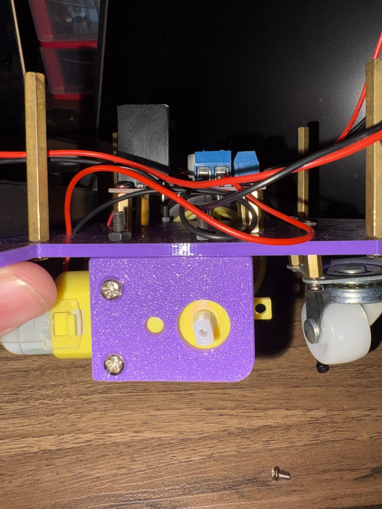
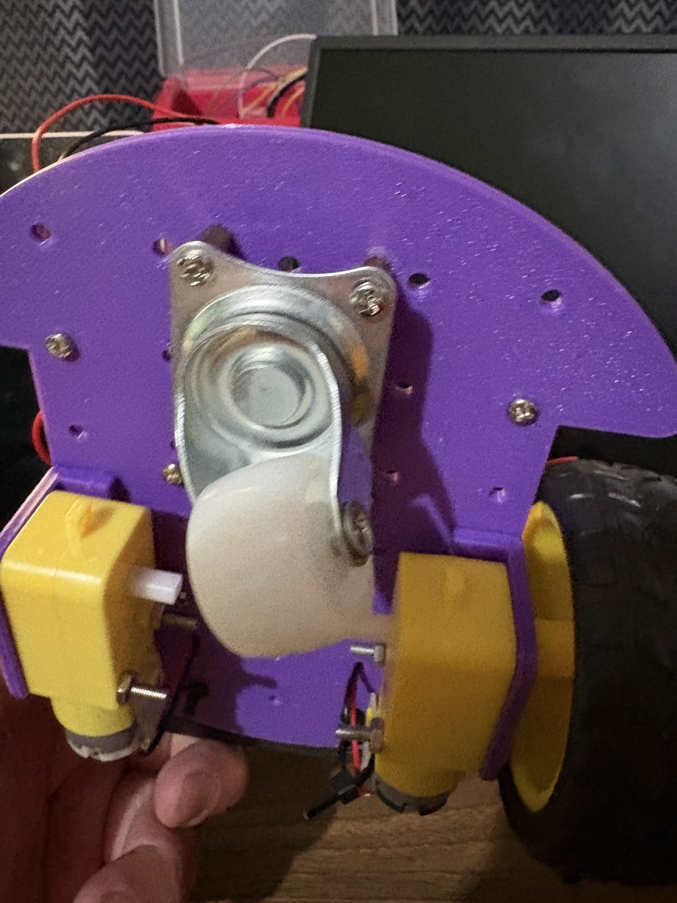
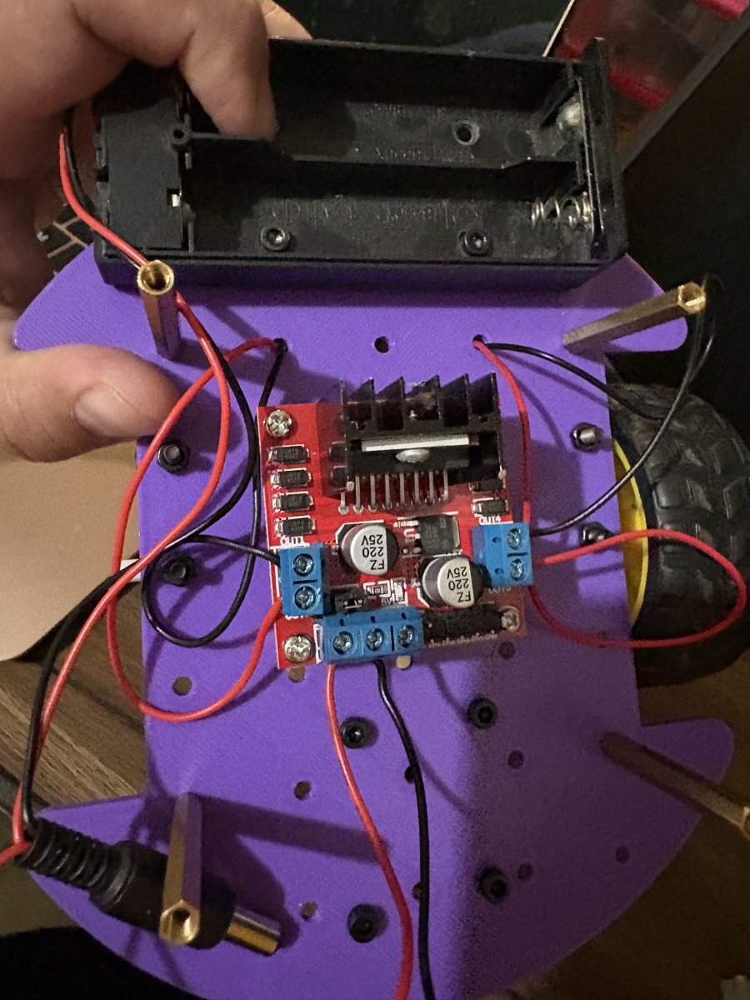
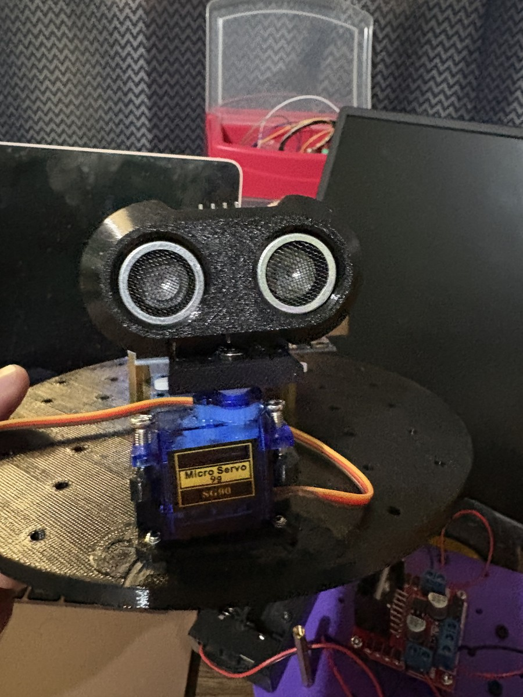
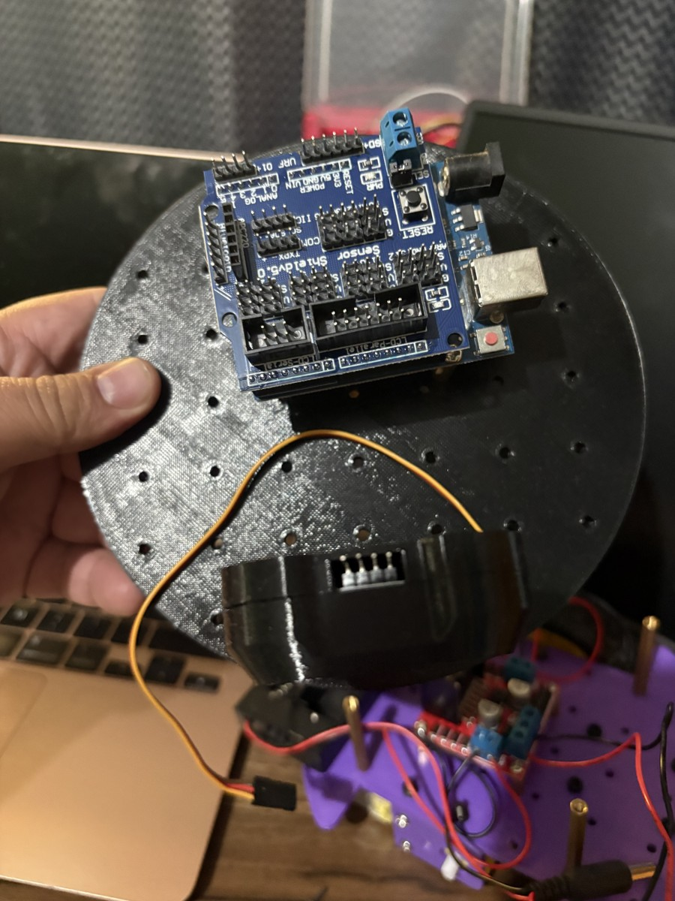
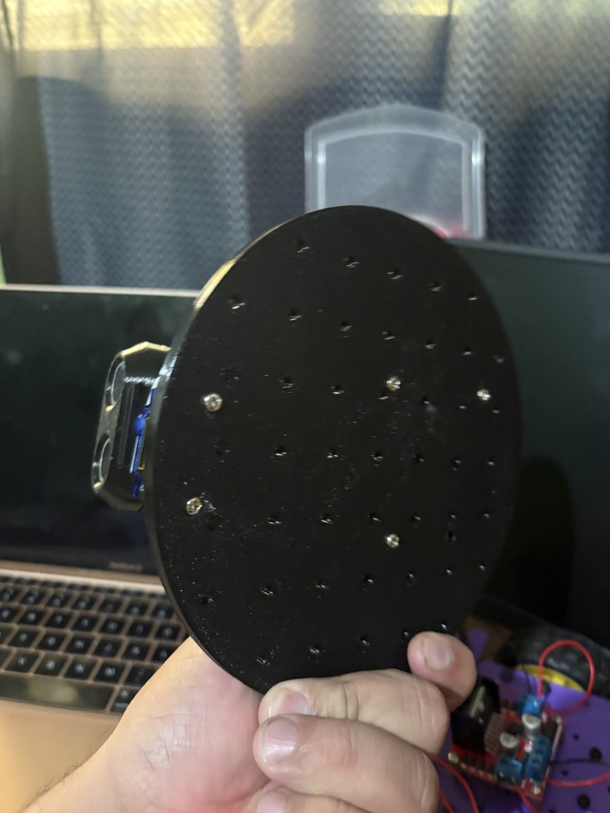
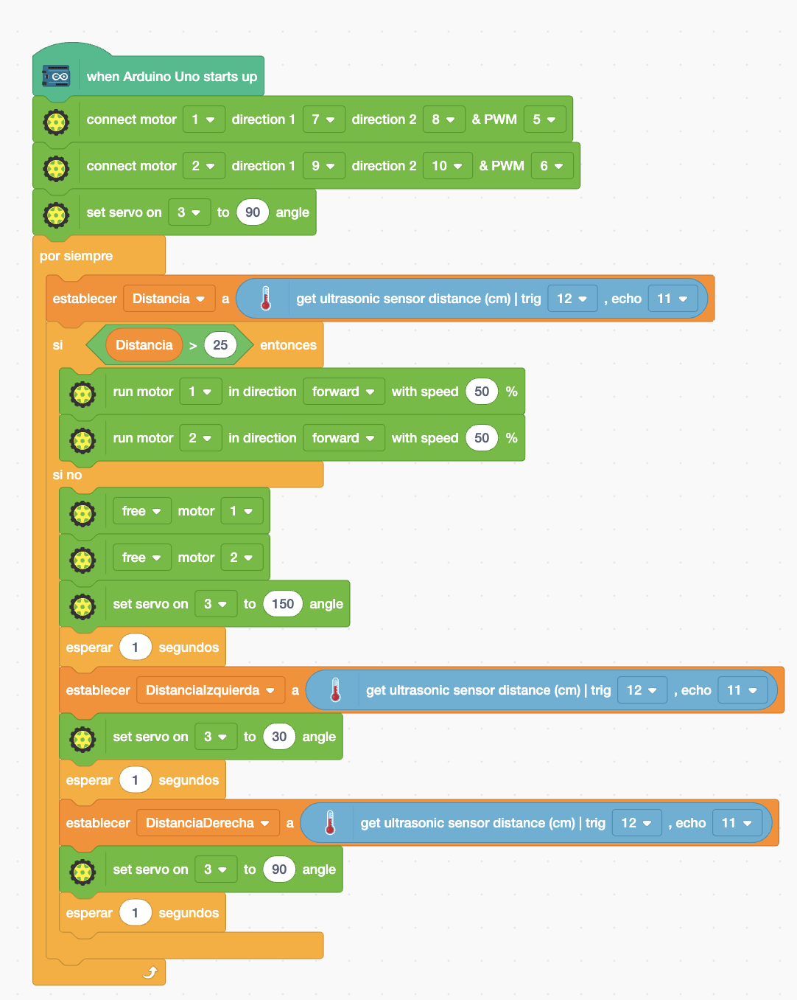

Guía de trabajo
Duración sugerida: 3 a 4 sesiones
Producto esperado: robot autónomo funcional, programa, pruebas, video y documentación del proceso.
El chasis no tiene que imprimirse en 3D
La impresión 3D es solamente una opción. Puedes construir la base con una tabla delgada, MDF, acrílico reutilizado o cartón rígido. Lo importante es que no se doble, que permita fijar los componentes y que las ruedas giren sin rozar.
- Sujeta firmemente motores, batería, Arduino y controlador.
- Evita puntas, tornillos o cables expuestos que puedan causar un corto.
- Deja espacio para que el servomotor gire sin golpear la estructura.
1. Armado real del chasis y el robot
Observa las fotografías y compara cada etapa con tu propio montaje. Tu chasis puede tener otra forma o material, pero debe cumplir la misma función.






2. Materiales y conexiones
- Arduino Uno o compatible.
- Dos motores DC con ruedas y una rueda loca.
- Puente H o shield controlador de motores.
- Sensor ultrasónico HC-SR04.
- Servomotor, batería, cables y material para el chasis.
| Elemento | Conexiones del proyecto |
|---|---|
| Motor 1 | Dirección 1: 7 · Dirección 2: 8 · PWM: 5 |
| Motor 2 | Dirección 1: 9 · Dirección 2: 10 · PWM: 6 |
| Servomotor | Señal: pin 3 |
| HC-SR04 | TRIG: 12 · ECHO: 11 |
Seguridad: no alimentes los motores desde el pin de 5 V de Arduino. Usa la entrada de potencia del controlador y verifica la tierra común (GND) de acuerdo con tu módulo.
3. Opción A: programación con bloques en PictoBlox
Selecciona Arduino Uno y el modo Upload. El programa mide al frente; cuando encuentra un obstáculo detiene los motores, observa a izquierda y derecha y ejecuta el giro programado hacia la ruta disponible.

- Configura los dos motores y centra el servo en 90°.
- Mide la distancia con TRIG 12 y ECHO 11.
- Si hay más de 25 cm libres, avanza al 50%.
- Si aparece un obstáculo, detente y mide a 150° y 30°.
- Realiza el giro indicado por la comparación de las mediciones.
4. Opción B: código C++ generado en PictoBlox
Puedes programar mediante bloques o trabajar con el código generado. Verifica el sentido físico de los motores durante las primeras pruebas.
// This C++ code is generated by PictoBlox
#include <motor.h>
#include <Servo.h>
Motor Motor1(7, 8, 5);
Motor Motor2(9, 10, 6);
Servo Servo3;
float getDistance(int trig, int echo) {
pinMode(trig, OUTPUT);
digitalWrite(trig, LOW);
delayMicroseconds(2);
digitalWrite(trig, HIGH);
delayMicroseconds(10);
digitalWrite(trig, LOW);
pinMode(echo, INPUT);
return pulseIn(echo, HIGH) / 58.0;
}
float Distancia;
float DistanciaIzquierda;
float DistanciaDerecha;
void setup() {
Servo3.attach(3);
Servo3.write(90);
}
void loop() {
Distancia = getDistance(12, 11);
if (Distancia > 25) {
Motor1.moveMotor(2.55 * 50);
Motor2.moveMotor(2.55 * 50);
} else {
Motor1.freeMotor();
Motor2.freeMotor();
Servo3.write(150);
delay(1000);
DistanciaIzquierda = getDistance(12, 11);
Servo3.write(30);
delay(1000);
DistanciaDerecha = getDistance(12, 11);
Servo3.write(90);
delay(1000);
if (DistanciaIzquierda > DistanciaDerecha) {
Motor1.moveMotor(-(2.55 * 50));
Motor2.moveMotor(2.55 * 50);
} else {
Motor1.moveMotor(2.55 * 50);
Motor2.moveMotor(-(2.55 * 50));
}
delay(650);
Motor1.freeMotor();
Motor2.freeMotor();
}
}El tiempo de giro de 650 ms es un punto de partida. Debe calibrarse según la batería, el peso, las ruedas y la superficie. La biblioteca motor.h debe estar disponible en el entorno usado por PictoBlox.
5. Pruebas obligatorias
Realiza las ocho situaciones y registra distancia, decisión esperada, decisión observada, error y corrección.
- Camino libre.
- Obstáculo frontal.
- Salida solamente por la derecha.
- Salida solamente por la izquierda.
- Callejón sin salida.
- Obstáculo angosto.
- Superficie con lecturas inestables.
- Batería con carga reducida.
6. Preguntas de análisis
7. Evidencias y entrega
- Inventario y diagrama de conexiones adaptado al equipo real.
- Fotos del armado, incluido el material usado para el chasis.
- Captura de bloques o código como texto copiable.
- Tabla de ocho pruebas con correcciones.
- Video de 60 a 90 segundos con el robot funcionando.
- Página individual de Google Sites con proceso y reflexión.
Firma de revisión
Profesor: ____________________________________